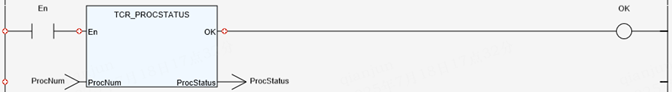

System Parameter.
Return the status of the specified process.
|
ProcNum : INT; |
Specify process number. |
|
ProcStatus : DINT; |
Return the status of process.
|
Return the status of the specified process.
If the value of the input parameter ‘ProcNum’ is out of range, the value of ‘ProcStatus’ is -1 and the return value of ‘TCR_ErrorID’ is 19.
(DINT):=TCR_PROCSTATUS(ProcNum:= (INT));
